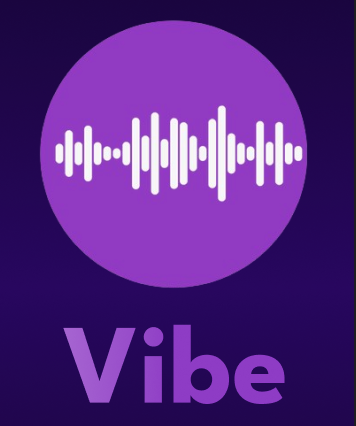
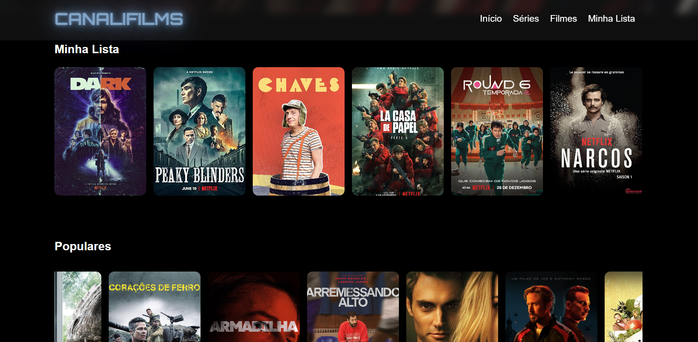
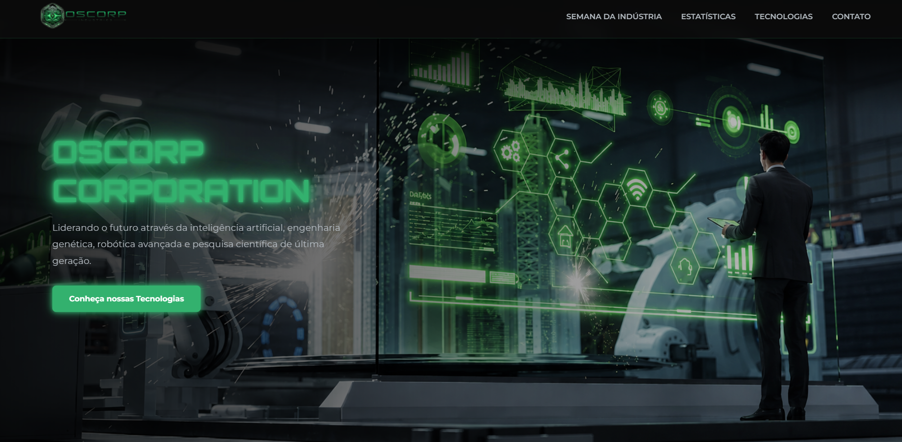

Meus Projetos

Logo profissional
Criação de logo profissional para divulgação de serviços tecnológicos.
Ver Projeto
Briefing Reserva Takumi
Aqui podemos ver todo o processo para a criação da empresa Reserva Takumi, desde o briefing com o cliente, até a criação da estética do site.
Ver Projeto
Reserva Takumi
Site comercial da rede de restaurantes de comida japonesa Reserva Takumi, à pedido do cliente.
Ver Projeto
Cadeado Animado
Criação de animação no estilo cadeado, visando explorar a ferramenta Figma.
Ver Projeto



Top 3 Cidades
Projeto focado em Flexbox, Grid Layout e responsividade para dispositivos móveis.
Ver Projeto.png)
Santos FC 2
Projeto focado em Flexbox, Grid Layout e responsividade para dispositivos móveis.
Ver Projeto
CanaliFilms
Projeto focado em Flexbox, Grid Layout e responsividade para dispositivos móveis.
Ver Projeto